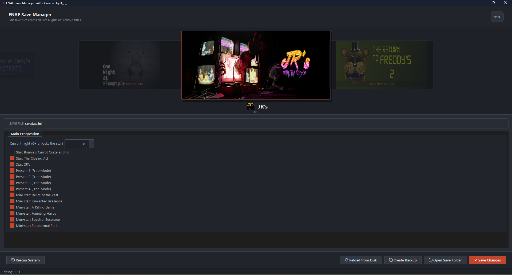

Creator
Meet the Developer
Created with dedication and passion by K_F_, also known as kiyanfnaflover-ui. This project was built to serve the FNAF community with a reliable and feature-rich save management tool.
The ultimate save editor for Five Nights at Freddy's. Modify save files, unlock nights, earn stars, and explore hidden content across the entire franchise.

A comprehensive toolkit built for the FNAF community, providing powerful save modification, backup, and restoration capabilities.
Quickly modify supported progression and unlockable content across all 17 supported game configurations with a single click.
Create secure backups before modifying any save files. Restore previous states at any time to keep your progress safe.
The tool automatically detects supported game data on your system, so you can start editing without manual configuration.
Modify supported values directly through the clean graphical interface. Edit nights, stars, ratings, cash, and more.
Toggle supported hidden events, secret content, and special game data that are normally difficult to access.
A clean, intuitive graphical interface built with PySide6. Designed for ease of use and a professional experience.
Full support for standard .ini save files generated by the Clickteam Fusion engine across the FNAF franchise and selected fangames.
Every capability designed to give you full control over your FNAF save data with a focus on safety and simplicity.
Quickly modify supported progression and unlockable content across all 17 supported game configurations with a single click. Whether you lost your progress or simply want to explore everything the games have to offer, this feature makes it effortless.
Create secure backups before modifying any save files. The backup system ensures you never lose your original data. Restore previous states at any time to keep your progress safe and revert unwanted changes.
The tool automatically detects supported game data on your system by scanning standard Clickteam Fusion save directories. This means you can start editing immediately without needing to manually locate or configure file paths.
Modify supported values directly through the clean graphical interface. Edit nights, stars, ratings, cash, completion certificates, and more. Each value is presented in an intuitive format with clear labels and controls.
Toggle supported hidden events and special game data that are normally difficult to access. Discover and activate secret content across the supported titles, unlocking a new layer of gameplay exploration.
A clean, intuitive graphical interface built with PySide6 provides a professional and user-friendly experience. The modern UI design makes navigation and operation straightforward for all users, whether beginners or advanced.
We are actively working on expanding the capabilities of the FNAF Save Manager with new features and additional game support.
Direct modification and management of FNAF World save data. This includes full support for save data located inside the MMFApplications directory, enabling users to modify their FNAF World progress, character levels, and unlocked content with the same ease as the main series titles.
PlannedAdvanced save-state functionality that allows you to save your progress at specific checkpoints. This feature is particularly useful for complex sequences in FNAF: Sister Location, where precise timing and progression management can make a significant difference in the gameplay experience.
PlannedAdditional community-made FNAF games are being evaluated and integrated into the save manager. This expansion includes support for more save formats and configurations, continuing the commitment to covering as much of the FNAF ecosystem as possible.
PlannedThe FNAF Save Manager automatically detects supported game data whenever possible. If you need to locate the files manually, standard Clickteam Fusion FNAF save data is commonly stored in the following directory:
The exact location may vary depending on the game and installation method.
A powerful combination of technologies delivering a reliable and efficient save management experience for Windows users.
Download the latest version from GitHub Releases or GameJolt. The installer provides a simple setup process for Windows users. After installation, launch FNAF Save Manager from the Start Menu or desktop shortcut.
Created with dedication and passion by K_F_, also known as kiyanfnaflover-ui. This project was built to serve the FNAF community with a reliable and feature-rich save management tool.
This project is intended for educational and personal use only. FNAF Save Manager is not affiliated with, endorsed by, or sponsored by Scott Cawthon or the owners of the Five Nights at Freddy's franchise. Please support the official Five Nights at Freddy's games and their creators by purchasing and playing the official releases. Five Nights at Freddy's and related characters, names, and intellectual property belong to their respective owners. This tool is provided as-is with no warranty. Users are responsible for their own use of the software.